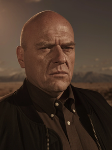
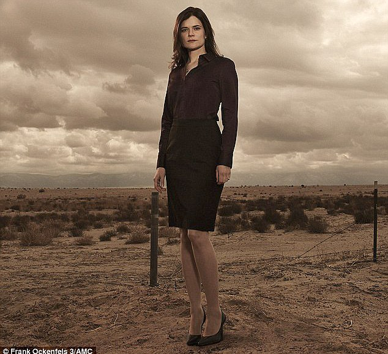

Waltuh is the main character of the breaking bad series. He was an overqualified chemistry teacher who was later diagnosed with terminal lung cancer. Later he partners up with Jesse Pinkman, a former student of Waltuh, to manufacture and sell methamphetamine. Later everything went down south when Waltuh's ego becomes larger than New Mexico. He was also known as Heisenberg.

Jesse was the sidekick of Walter White, a high school chemistry teacher who turns into Heisenberg, a dreaded drug lord, after his cancer diagnosis. Throughout Walter's descent into devilry, Pinkman remains his, admittedly reluctant, companion and that remains true also for most of White's crimes.

Hank Schrader is a DEA agent who seeks to take down the drug lord Heisenberg, unaware that it is his brother-in-law and eventual archenemy, the villainous protagonist Walter White. Hank is also faced with numerous threats from the rival drug cartels and from drug lord Gustavo Fring, which takes a toll on Hank's mental health as the series progresses, and eventually starts taking more extreme measures to find "Heisenberg" and arrest him.
Being the wife of Walter White was certainly not easy. Skyler stood by Walt after his cancer diagnosis and remained a pillar for the rest of the family to lean on. Walt's constant disappearances and erratic behavior put a strain on his marriage with Skyler. Without her knowledge, Walt was distracted by his secret career as an emerging drug kingpin. Skyler was understandably frightened and furious when she learned the truth, but she went on to mastermind a money laundering scheme for Walt's ill-gotten gains.

I've ran out of sentences bro :(
